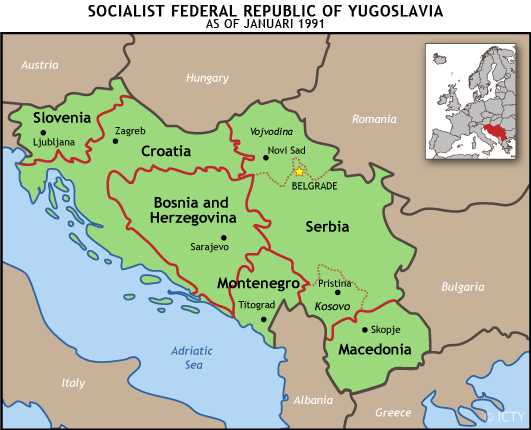
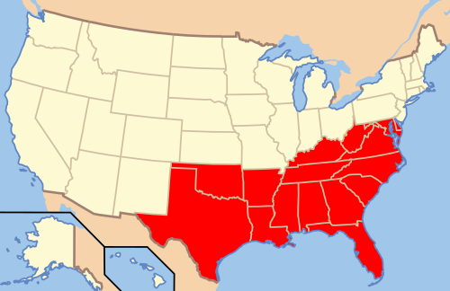
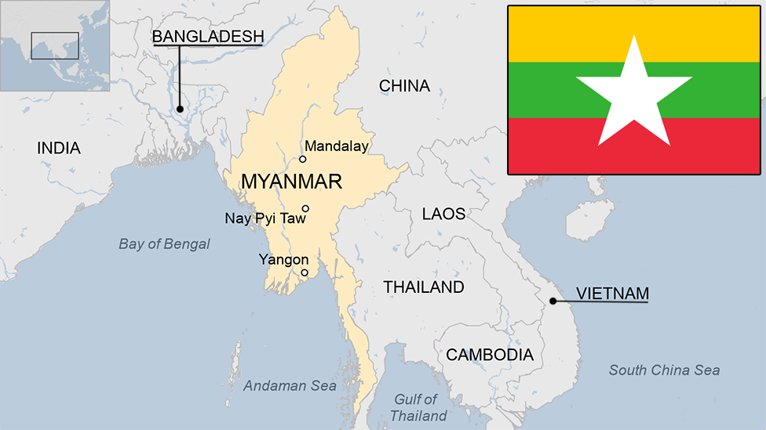

Heritage
By Debra Willard
What is heritage?
Heritage is a concept that is inherently ambiguous, it can be something that connects a group of people such as being in the same geographical region. Heritage is sometimes chronological and can also be defined as a set of accepted attitudes, and relationships from the past. Heritage is also described as an emotional connection to places, objects and practices of the past. Heritage is not a concept that just is, rather it is a man made system. So how can something that involves assumably positive feelings cause so much strife against other groups?
 The History of the Two Souths
Depicted in these two images are the American South and Southeastern Europe. At a glance and with slight background knowledge it would be hard to find an overlaying connection between these two regions of the world, but they are more similar than thought to be. When learning about the concepts of Heritage and how sometimes hate is a derivative of the heritage and a result of that Hate can lead to genocide, the cleansing of a culture, or peoples.
Heritage is a person’s unique, inherited sense of family identity: the values, traditions, culture, and artifacts handed down by previous generations.
The American South and the Civil War
The American South is a region whose heritage is often coupled with the idea or concept of hate. During the years of 1861 - 1865, the American South (Confederacy), and the north (Union) were in a Civil war with the main cause of the war being slavery. Slavery in the Confederacy was widely done off the bases of race. The ending of this war led to the acceptance of a “Southern Heritage” that accepted white supremacy, and racism. Due to this ideology the confederacy fought to keep the Lost Cause alive This was the turning event that caused the thought of southern heritage to be thought of in a negative light rather than a positive light such as the idea of southern hospitality. This is not to say that people in the south are inherently racist, but the deeply rooted racialization that took place in the south and the segregation has caused for southern Heritage to be seen as hateful, making it harder to separate the hate from the heritage.
The Fall of Yugoslavia
The Former Yugoslavia fell due to the conflict between the different ethnic groups, however this was not always evident. Under Yugoslavia, most of the prominent ethnic groups were united due to a shared sense of nationalism and shared languages. The different ethnic groups began to gain their own sense of Nationality and wanted to be differentiated from the others and wanted to gain their own territories. This led to Serbia wanting to preserve the heritage of togetherness, which caused many ethnic wars in the region.
Bosnia
Out of all the war crimes committed by Serbia during the Bosnian War, the ethnic cleansing of Bosniak Muslim men. The question that arises is how is this tragedy related to heritage. Recalling the dynamic definition of heritage, “a set of accepted attitudes.” It can be argued that because of the long standing history of Serbia disliking the Bosniak Muslim ethnic group, can in fact be considered as much as anything else to be a part of the Serbian heritage although it is negative in nature. Likewise this same argument can be made for the genocide in Myanmar.
Myanmar
In Myanmar after the majority of the population of the burmese community who make up seventy percent of the population voted it was assumed that this would cause a change in the dictatorship and move Myanmar to a more conventional form of democracy. This turn, however, ignored the minority Muslim Ethnic group (Rohingya). The Rohingya, much like African Americans in the U.S. The South was chained by legal discrimination and state violence. This systematic and widely accepted ideology that the Rohingya were not a real ethnic group in Myanmar can be considered a part of the Mynamars Heritage, even though in hindsight it affects the majority population negatively when it is viewed around the world. In a way it is difficult to separate heritage from hate when violence occurs on such a wide scale.